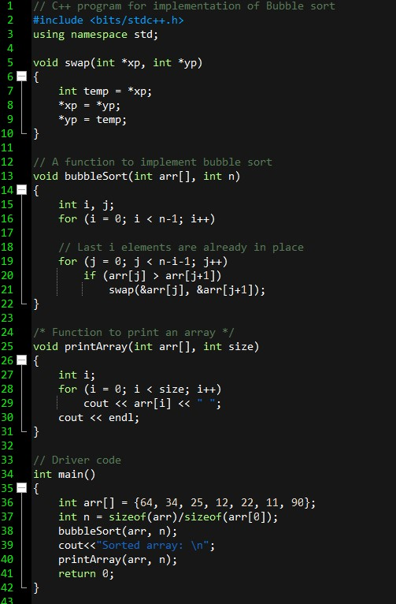
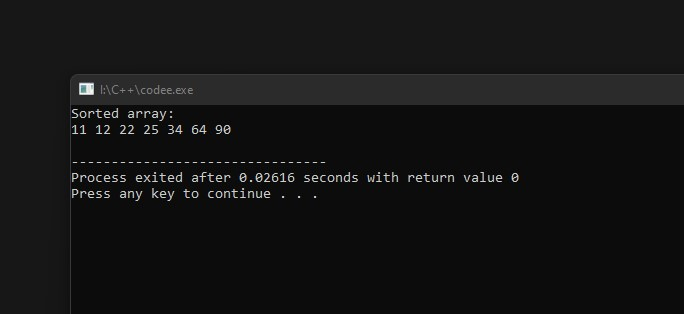

Algorithm 1 : Sorting
Sorting refers to arranging data in a particular format. Sorting algorithm specifies the way to arrange data in a particular order. Most common orders are in numerical or lexicographical order.
The importance of sorting lies in the fact that data searching can be optimized to a very high level, if data is stored in a sorted manner. Sorting is also used to represent data in more readable formats. Following are some of the examples of sorting in real-life scenarios −
- elephone Directory The telephone directory stores the telephone numbers of people sorted by their names, so that the names can be searched easily.
- Dictionary The dictionary stores words in an alphabetical order so that searching of any word becomes easy.
Bubble Sort
Bubble sort is a simple sorting algorithm. This sorting algorithm is comparison-based algorithm in which each pair of adjacent elements is compared and the elements are swapped if they are not in order. This algorithm is not suitable for large data sets as its average and worst case complexity are of Ο(n2) where n is the number of items.
Following program traverses and prints the elements of an array:

When we compile and execute the above program, it produces the following result −

Worst and Average Case Time Complexity: O(n*n). Worst case occurs when array is reverse sorted.
Best Case Time Complexity: O(n). Best case occurs when array is already sorted.
Auxiliary Space:O(1)
Boundary Cases::Bubble sort takes minimum time (Order of n) when elements are already sorted.
Sorting In Place: Yes